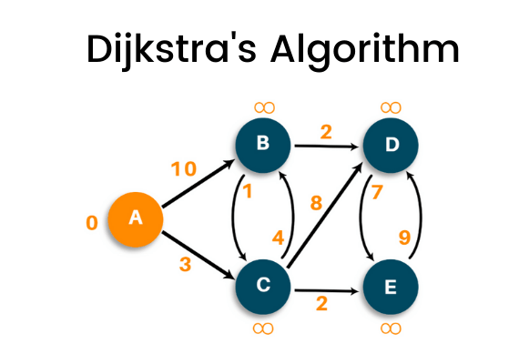

I'm a Computer Science student pursuing a Bachelor's of Science at Arizona State University. I like solving problems and learning new things. I'm currently searching for a internship for 2026. I have completed coursework in Distributed Software Development, Operating Systems, Data Structures and Algorithms, Object Oriented Programming and Linear Algebra.
